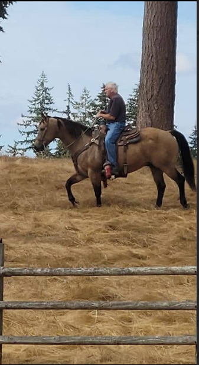

Large livestock
- Horses
- Cattle
- Llamas
- Goats
- Sheep
Family-owned • Roy, WA • 24/7
Family-owned deceased animal removal based in Roy, WA, serving Pierce, Thurston, King, and surrounding rural counties across the South Sound and beyond — with statewide and out-of-state large animal transport available. Available 24/7.
Whether it’s an emergency or just a question, I’m here to help.
Aaron Carver
32319 60th Ave. S.
Roy, WA 98580
What I Handle
Every removal is handled promptly, discreetly, and with care.
Why Families Trust Me

Our Story

This business was founded by my late father, James Wayne Carver — a respected farrier, championship roper, and trusted name in the community for deceased animal removal. He worked closely with local veterinarians — including Ernie Grubb, Michael Clark, and Sara Perkins — to provide safe, humane removal for large animals.
Due to the sensitive nature of this work, I do my best to coordinate closely with your veterinarian's schedule — especially in emergency situations, where ongoing communication in the moment matters most. Advance scheduling is always appreciated, but if I can't be onsite at the same time as the vet, know that your situation is a priority and I will get there as quickly as possible.
I've been running this business on my own since 2023, and in that time I've come to know many people throughout this community — including many of the same veterinarians my father built relationships with over the years. I'm proud to keep those ties going, and to keep running this as a family business.
I understand that these animals were part of a family. Giving that loss the respect and attention it deserves is always my priority.
I'm a one-man crew, licensed, bonded, and insured. Any communication you have will come directly from me. If any issues come up, I'm here, down-to-earth, and I'll always do my best to make things right.
Where I Serve
Most of my calls are for horses and other large livestock, which means most of my clients live outside city limits — on acreage, farms, and rural property, not in dense neighborhoods. Here's where I regularly work:
Don't see your town listed? I understand that there's few providers offering this kind of large-animal service in the region — so I don't limit my area. I'll travel wherever the job actually needs me to be, statewide and out of state. I've made the drive as far as Forks, WA, and I've coordinated necropsy transport to university veterinary programs, including delivering a horse to the University of Oregon.
Quick Quote
Reach out any time — day or night. I’m here to help with a respectful, straightforward response.
To get you an accurate quote, please include:
I understand there are always questions and concerns when dealing with the remains of a beloved animal. Feel free to reach out with any question.
Contact
Whether it’s an emergency or just a question, I’m here to help. Reach out any time — day or night.
Lines are open 24/7. If I don’t answer right away, leave a voicemail or text and I’ll get back to you as soon as I’m able.
Serving Pierce, Thurston, King, and surrounding rural counties across the South Sound and beyond, with statewide and out-of-state large animal transport available.